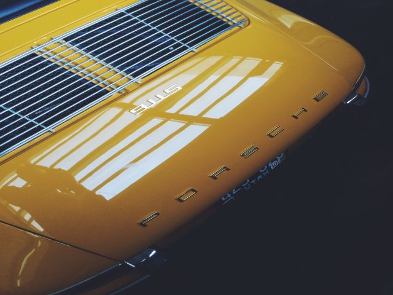
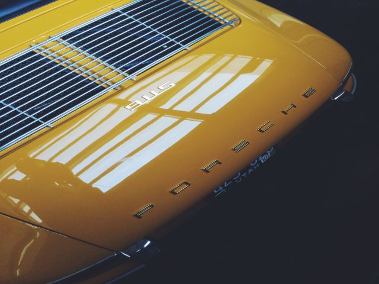

Car House Center - auto care
Full services, repair, replacement, washing and cleaning.
show more information
Full services, repair, replacement, washing and cleaning.
show more information
Our service was founded in 2005, since then we have gained a lot of experience, so we can professionally repair your car, as well as advise on many matters related to its operation. To date we are expanding our knowledge and we supply new tools to professionally repair new cars.
 

A stable position on the market we owe the commitment to service, highly qualified professionals, their advanced technical knowledge and practical skills that translate into a job well done, and then on customer satisfaction.
65.99$
99.99$
199.99$
249.99$